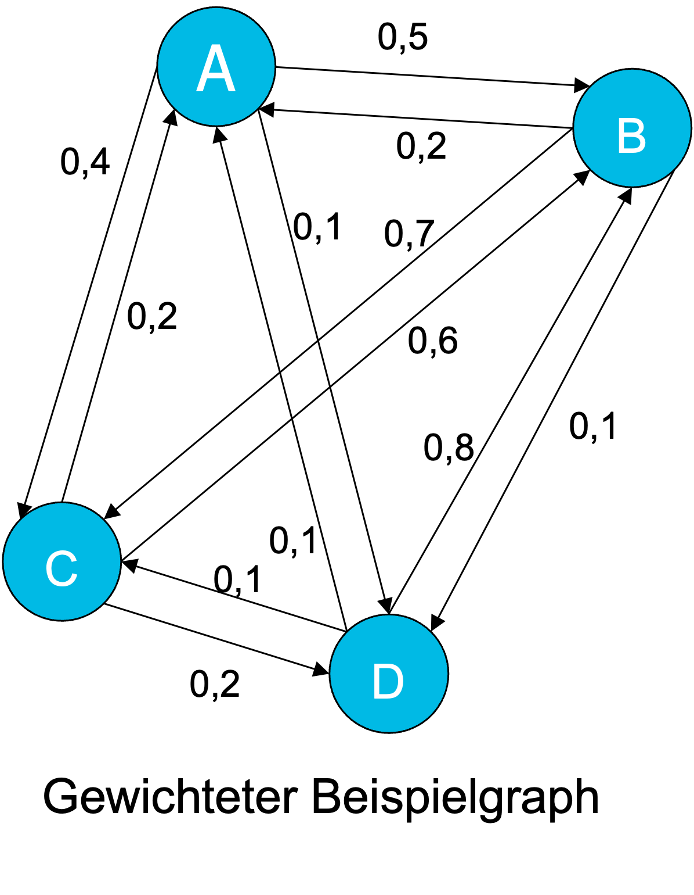
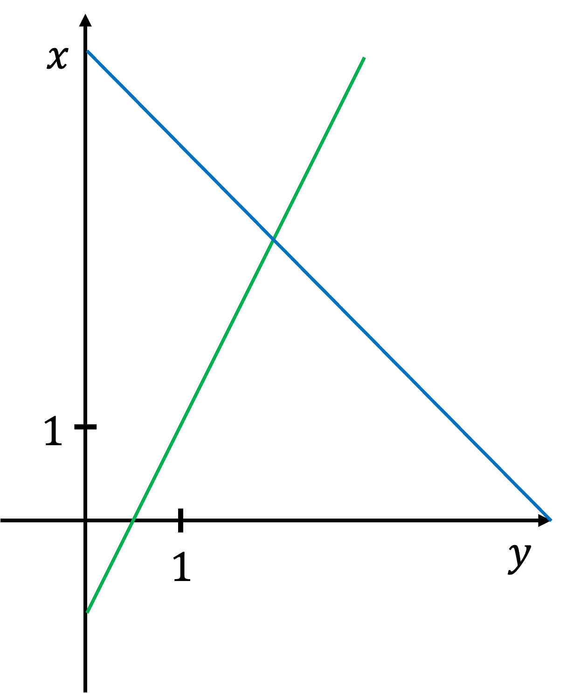
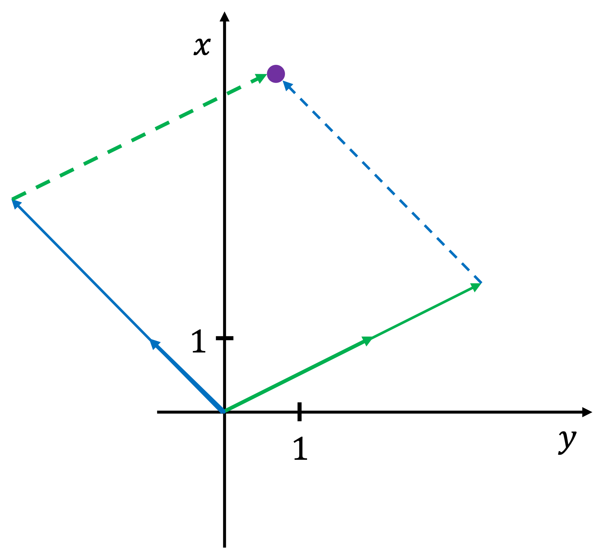
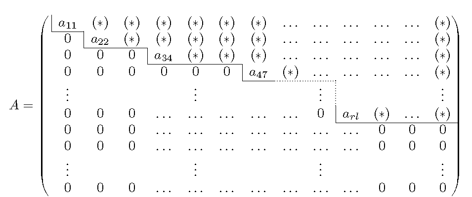
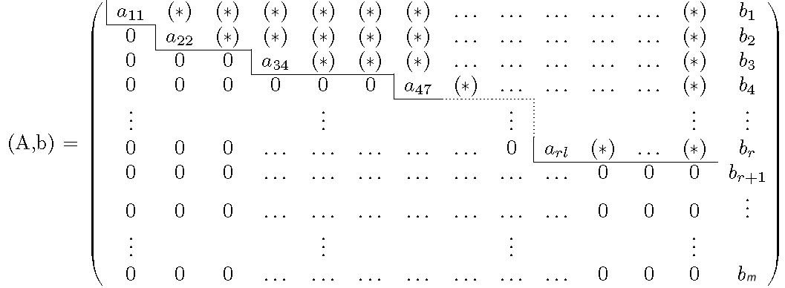

Kapitel 4 - Der Gauß-Algorithmus#
4.1 Lernziele#
In diesem Abschnitt lernen wir die folgenden Dinge:
Grundbegriffe für Lineare Gleichungssysteme
Den Gauß-Algorithmus
Anwendung des Page-Rank Algorithmus
Allgemeine Beschreibung der Lösungsmenge für ein Lineares Gleichungssystem
Lernziele
Lösen von linearen Gleichungssystemem mittels Gauß-Algorithmus
Matrizen in Zeilenstufenform bringen
Geometrisches Verständnis für Lineare Gleichungssysteme
4.2 Der PageRank Algorithmus#
Der PageRank Algorithmus ist ein Verfahren, das von Google entwickelt wurde um die Popularität von Webseiten zu bemessen und damit bessere Suchergebnisse zu produzieren.
Die Grundidee besteht darin, dass wir die popularität davon abhängt wie viele andere populäre Webseiten auf die ursprüngliche Seite verlinken. Wenn eine Seite also von vielen Populären Webseiten verlinkt wird, so der PageRank eher groß. Falls es nur von wenigen weniger Populären Seiten verlinkt wird so ist er eher klein.
Als Beispiel nehmen wir an wir haben ein Netzwerk aus Vier Webseiten (A,B,C,D). Diese sind wie folgt verlinkt.

Das heißt, das z.B. 0,5 der Links von Seite A auf Seite B verweisen und 0,2 der Links von B auf A verweisen.
Der Pagerank ist nun durch die folgende Wahrscheinlichkeit gegeben:
\(P(X)\) bezeichnet die Wahrscheinlichkeit, dass ein User sich auf Webseite X zu einem gegebenen Zeitpunk \(t\) aufhält.
Der Pagerank ist nun die Sortierung nach \(P(X)\) je größer \(P(X)\) desto populärer ist diese Webseite.
Es gibt nun zwei MÖglichkeiten auf die Seite \(X\) zu gelangen:
2 Möglichkeiten
User ist auf Webseite Y und klickt auf den Link zu X.
User wählt eine zufällige Webseite adhoc aus.
Der Dampingfaktor d (normalerweise gilt d=0,85) besagt, dass mit Wahrscheinlichkeit \(d\) die Möglichkeit 1) passiert und mit Wahrscheinlichkeit \(1-d\) Möglichkeit 2).
Frage: Wie berechnen wir die Wahrscheinlichkeiten \(P(A),P(B),P(C)\) und \(P(D)\).
Wir versuchen zunächst eine Gleichung für \(P(A)\) aufzustellen.
Berechnen wir zunächst die Wahrscheinlichkeit für Variante 1): Die Wahrscheinlichkeit, dass jemand von Seite B auf A kommt ist: \(0,2\cdot P(B)\), von C auf A ist \(0,2\cdot P(C)\) und von D auf A ist \(0,1\cdot P(D)\). Damit ergibt sich für Möglichkeit 1):
Wie sieht es mit Variante 2) aus. Da es Vier Webseiten gibt, ist die Wahrscheinlichkeit zufällig auf Seite 4 zu kommen: \(1/4\).
Insgesamt ergibt sich unter Berücksichtigung des Dampingfaktors \(d=0.85\) folgende Gleichung:
Wenn wir das selbe für die Wahrscheinlichkeiten \(P(B)\),\(P(C)\) und \(P(D)\) machen bekommen wir folgendes System von Gleichungen:
Das sind also 4 Gleichungen mit 4 Unbekannten.
Frage: Wie können wir ein solches System lösen. Genau damit wollen wir uns in diesem Kapitel beschäftigen.
Mit der Lösung von Linearen Gleichungssystemen mittels dem Gauß-Algorithmus.
4.3 Lineare Gleichungssysteme#
In diesem Kapitel wollen wir formal einführen was ein lineares Gleichungssystem ist und wie dieses durch Matrizen dargestellt werden kann.
Definition 39
Ein lineares Gleichungssystem mit \(n\) Unbekannten besteht aus \(m\in \mathbb{N}\) Gleichungen der Form:
Dabei sind \(x_1,\dots,x_n\) die **Variablen\( des Systems und die \)a_ij$ die Koeffizienten.
Wir nennen \(A = \left( \begin{matrix} a_{11} & \dots & a_{1n} \\ \vdots & \ddots & \vdots \\ a_{m1} & \dots & a_{mn} \end{matrix} \right)\) die Matrix des Systems und \((A,b)=\left( \begin{matrix} a_{11} & \dots & a_{1n} & b_1 \\ \vdots & \ddots & \vdots & \vdots \\ a_{m1} & \dots & a_{mn} & b_m \end{matrix} \right)\) die erweiterte Koeffizientenmatrix.
Example 37
Bestimmen Sie die Lösungsmenge des folgenden linearen Gleichungssystem
Wir lösen zunächst die erste Gleichung nach \(x\) auf:
Nun setzen wir diese Identität in die zweite Gleichung ein und erhalten:
Dies können wir nun leicht nach \(y\) auflösen und erhalten:
Setzen wir dies wieder in (*) ein erhalten wir außerdem:
Die Lösungsmenge ist also:
Das war einfach aber was machen wir mit 3 Gleichungen mit 3 Unbekannten. Oder noch schlimmer was machen wir mit \(n\) Gleichungen und \(n\) Unbekannten? Dafür brauchen wir den Gauß-Algorithmus. Aber vorher schauen wir uns noch die Geometrische Interpretation von Linearen Gleichungssystem an.
4.4 Geometrische Interpretation von Linearen Gleichungssystemen#
Lineare Gleichungssysteme haben neben der algebraischen Beschreibung auch eine intuitive geometrische Interpretation. Es gibt Grundsätzlich zwei verschiedene Geometrische Berschreibungen:
Zeileninterpretation
Spalteninterpretation
Zeileninterpretation#
Als Beispiel betrachten wir das folgende Lineare Gleichungssystem
Beide Gleichungen können wir als Geraden in der Ebene interpretieren. Die Lösungsmenge können wir dann als Schnittpunktmenge der beiden Geraden interpretieren. Es ergibt sich also folgendes Bild.

Durch diese Interpretation können wir direkt die Struktur der möglichne Lösungsmengen von zwei Gleichungen mit zwei Unbekannten ablesen:
Zwei Geraden schneiden sich: genaue eine Lösung
Zwei Gerade sind parallel aber nicht identisch: keine Lösung
Zwei Geraden sind identisch: unendlich viele Lösungen.
Spalteninterpretation#
Eine weitere aber weniger bekannte Beschreibung ist die Spalteninterpretation. Dafür schreiben wir die beiden Gleichungen in Spaltenform um:
Das kann man interpretieren, dass die Lösungen die Vielfache die wir zu den Vektoren \(\begin{pmatrix} 2\\ 1 \end{pmatrix}\) und \(\begin{pmatrix} -1\\ 1 \end{pmatrix}\) mutliplizierne müssen um auf den Punkt \(\begin{pmatrix} 1\\ 5 \end{pmatrix}\) zu kommen.

Auch mit dieser Interpreation können wir nun wieder die Lösungsmenge charakterisieren:
Zwei Vektoren haben verschiedene Richtungen: ** es gibt genau eine Lösung**
Zwei Vektoren sind in der Gleichungen Richtung und der Punkt liegt nicht auf der Geraden: keine Lösung
Zwei Vektoren sind in der gleichen Richtung und der Punkt liegt auf der dadurch definierten Geraden: unendlich viele Lösungen.
4.5 Der Gauß-Algorithmus#
Der Gauß Algorithmus ist ein Verfahren um systematisch die Lösungsmenge von linearen Gleichungssystemen zu bestimmen.
Der Gauß-Algorithmus basiert auf sogenannten elementaren Zeilenumformungen.
Definition 40
Sei \((A,b)=\left( \begin{matrix} a_{11} & \dots & a_{1n} & b_1 \\ \vdots & \ddots & \vdots & \vdots \\ a_{m1} & \dots & a_{mn} & b_m \end{matrix} \right)\) die erweiterte Koeffizientenmatrix eines linearen Gleichungssystems.
Wir nennen die folgenden Operationen auf der Matrix eine elementare Zeilenumformung:
Vertauschung zweier Zeilen
Addition des 𝜆- fachen Einer Zeile einer Zeile zu einer anderen Zeile.
In form von Gleichungen bedeutet 1) einfache nur die Reihenfolge der Gleichungen zu tauschen und 2) Bedeutet, dass wir zwei Gleichungen addieren und eine neue Gleichung dadurch entsteht.
Die Wichtige Erkenntnis ist nun, das beide Umformungen die Lösungsmenge des Systems nicht ändern.
Wir haben daher folgenden Satz:
Theorem 18
Sei \((𝐴,𝑏)\) die erweiterte Koeffizientenmatrix eines lineares Gleichungssystems und \((\tilde{𝐴},\tilde{𝑏} )\) ein weiteres Gleichungssystem, dass durch elementare Zeilenumformung aus \((𝐴,𝑏)\) entsteht. Dann haben beide Gleichungssystem, die gleiche Lösungsmenge.
Der Gauß Algorithmus ist nun ein Verfahren welches die erweiterte Koeffizientenmatrix unter Zuhilfenahme von elementaren Zeilenumformungen soweit vereinfacht, dass wir das System lösen können.
Beispiele für den Gauß-Algorithmus#
Wir wollen zunächst den Fall betrachten, wenn der Gauß-Algorithmus erfolgreich durchgeführt werden kann. Hierfür betrachten wir den Fall, dass wir \(n\) Gleichungen mit \(n\) Unbekannten haben. Also gleich viele Gleichungen wie unbekannte.
Wir betrachten das Beispiel:
Example 38
Es sei folgendes Lineares Gleichungssystem gegeben:
Die Lösung mittels Gauß Algorithmus wird in dem folgendem Video beschrieben:
Und noch ein Beispiel:
Example 39
Es sei folgendes Lineares Gleichungssystem gegeben:
Die Edgecases - Reparierbarer und nicht reparierbarer Fall.#
Der Algorithmus so wie wir ihn gesehen haben kann fehlschlagen wenn wir in einem Diagonelement eine \(0\) stehen haben. Dann können wir kein Vielfaches dieser Zeile zu einer weiteren addieren um die Zahlen unterhalb dieses Diagonalelements zu null zu machen.
Es kann jedoch sein, dass dieser Fall reparierbar ist, in dem wir Zeilen vertauschen.
Dafür betrachten wir das folgende Beispiel:
Example 40
Es sei folgendes Lineares Gleichungssystem gegeben:
Betrachten Sie nun das folgende Video:
Es kann leider aber auch vorkommen, dass wir durch vertauschen von zwei Zeilen den Algorithmus nicht reparieren können. Dafür betrachten wir das folgende Beispiel.
Example 41
Es sei folgendes Lineares Gleichungssystem gegeben:
Betrachten Sie nun das folgende Video:
Der Allgemeine Fall#
Wir wollen nun im letzten Schritt eine Allgemeine Beschreibung der Lösungsmenge von linearen Gleichungssystemen geben.
Dafür müssen wir zunächst die Folgenden Definitionen vornehmen.
Definition 41
Eine Matrix \(A\) ist eine Zeilenstufenform falls es von der folgenden Gestalt ist.  wobei die mit (*) markierten Einträge \(\neq 0\) sind. Wir nennen die Zahl \(r\in \mathbb{N}\) den Rang der Matrix.
Die Definition ist weniger kompliziert als es zunächst aussehen mag. Wir meinen lediglich das wenn wir eine Trennline zwischen Einträgen, die nicht 0 sind und den Nulleinträgen wie eine Treppe verläuft. Also entweder runter geht oder gerade bleibt. Dabei kanne die Treppenstufe beliebig lang sein.
Ein wichtiger Spezialfall, den wir bereits gesehen haben sind sogenannte obere Dreiecksmatrizen. Diese sind wie folgt definiert.
Definition 42
Wir nennen eine Matrix, mit der folgenden Form eine obere Dreiecksmatrix
wobei die \(a_ii\neq 0\).
Remark 2
Jede obere Dreiecksmatrix ist insbesondere eine Matrix in Zeilenstufenform
Wir sind nun in der Lage einen Allgemeinen Satz zu formulieren welches Ergebnis der Gauß-Algorithmus in jedem Fall liefert.
Theorem 19
Sei \((𝐴,𝑏)\) die erweiterte Koeffizientenmatrix eines linearen Gleichungssystems. Dann existiert eine endliche Kette von elementaren Zeilenumformungen, so dass das Transformierte System \((\tilde{𝐴} ,\tilde{𝑏} )\) die Eigenschaft hat, dass \(\tilde{𝐴}\) Zeilenstufenform besitzt.
Anders ausgedrückt besagt der obige Satz, dass das Ergebnis einer Matrix nach dem Gauß-Algorithmus stets Zeilenstufenform besitzt.
Nun können wir beschreiben wir die Lösungsmenge von Linearen Gleichungen allgemein beschreiben.
Nun bemerken wir das folgende. Nehmen wir an wir haben ein erweiterte Koeffizientenmatrix, wobei \(A\) Zeilenstuform besitzt. Dann haben wir die folgende Situation
.
Falls nun eine der Zahlen \(b_{r+1},\dots , b_n \neq 0\) so kann das System keine Lösungen besitzen, da dann die Gleichung niemals erfüllt sein kann.
Falls \(b_{r+1}=b_{r+2}=\dots = b_n=0\) so sind die Gleichung stets erfüllt und wir erhalten unendlich viele Lösungen.
Falls die Matrix \(A\) eine obere Dreiecksmatrix ist, so bekommen wir eine einzige Lösung.
Insgesamt ergibt sich der folgende Satz.
Theorem 20
Gegeben sein ein lineares Gleichungssystem mit \(n\) Gleichungen in \(m\) Unbekannten mit einer erweiterten Koeffizientenmatrix \(B=(A,b)\) wo bei \(A\) die Matrix des Systems ist. Dann gibt es die folgenden Fälle:
\(A\) ist eine obere Dreiecksmatrix: In diesem Fall besteht die Lösungsmenge aus genau einem Element.
\(A\) ist keine obere Dreiecksmatrix, es gilt \(r<n\) und es gibt ein \(b_k\neq 0\) für ein \(k\in \left\{r+1,\dots , n\right\}\). Dann gibt es keine Lösung.
\(A\) ist keine obere Dreiecksmatrix und es gilt entweder \(r=n\) oder \(b_{r+1}=\dots b_n\). Dann gibt es unendlich viele Lösungen.
Das ganze wollen wir nun noch an zwei Beispielen illustrieren.
Example 42
Beschreibe die Lösungsmenge des folgenden Linearen Gleichungssystems:
Example 43
Wir schauen uns nun nochmal das folgende Gleichungssystem an